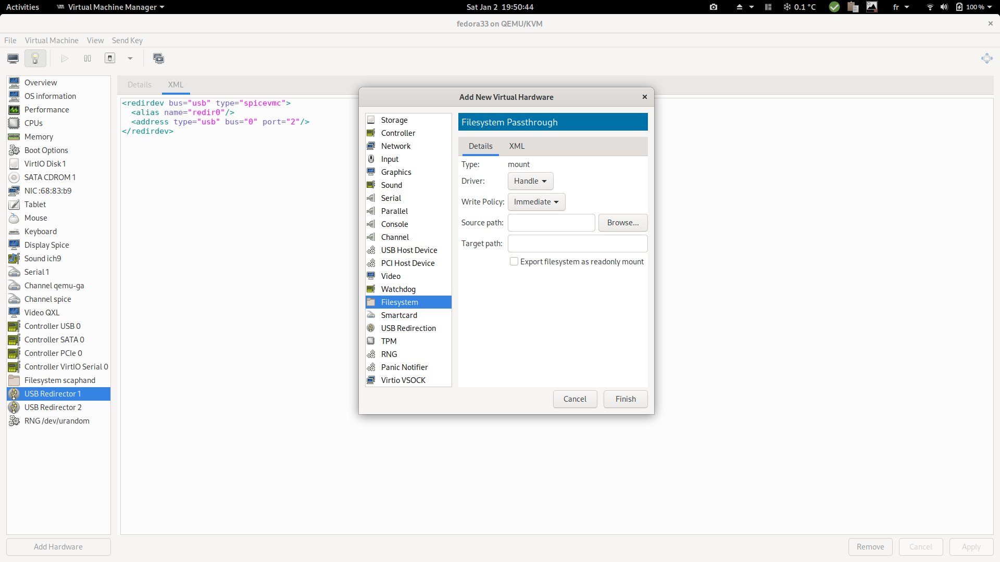

Qemu exporter
Computes energy consumption metrics for each Qemu/KVM virtual machine found on the host. Exposes those metrics as filetrees compatible with the powercap_rapl sensor.
Note that this is still experimental. Metrics are already considered trustworthy, but there are discussions and tests to be performed about the acceptable ways to share the data with the guests/vms. Any feedback or thoughts about this are welcome. Please refer to the contributing section.
Usage
-
Run the scaphandre with the qemu exporter on your bare metal hypervisor machine:
scaphandre qemu # this is suitable for a test, please run it as a systemd service for a production setup -
Default is to expose virtual machines metrics in
/var/lib/libvirt/scaphandre/${DOMAIN_NAME}withDOMAIN_NAMEbeing the libvirt domain name of the virtual machine. First create a tmpfs mount point to isolate metrics for that virtual machine:mount -t tmpfs tmpfs_DOMAIN_NAME /var/lib/libvirt/scaphandre/DOMAIN_NAME -o size=10m -
Ensure you expose the content of this folder to the virtual machine by having this configuration in the xml configuration of the domain:
<filesystem type='mount' accessmode='passthrough'> <driver type='virtiofs'/> <source dir='/var/lib/libvirt/scaphandre/DOMAIN_NAME'/> <target dir='scaphandre'/> <readonly /> </filesystem>You can edit the vm properties using
sudo virsh edit <DOMAIN_NAME>using your usual editor. But it is more convenient to use virtual-manager, as explained in the following screenshots.It also helps to define the correct syntax which probably depends from the qemu version. You can check that the above configuration is slightly different form the one below.
a. Right click in the hardware menu: 
b. Enter the following parameters:

c. XML generated as a result:

-
Ensure the VM has been started once the configuration is applied, then mount the filesystem on the VM/guest:
mount -t 9p -o trans=virtio scaphandre /var/scaphandre -
Still in the guest, run scaphandre in VM mode with the default sensor:
scaphandre --vm prometheus -
Collect your virtual machine specific power usage metrics. (requesting http://VM_IP:8080/metrics in this example, using the prometheus exporter)
-